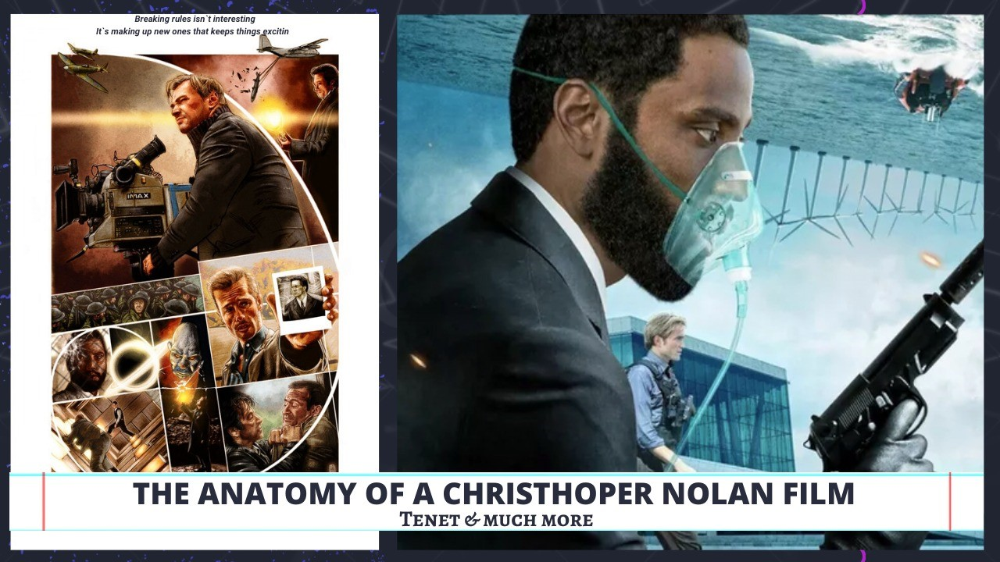

The Dark Knight Rises (2012)
The third chapter of Nolan’s seminal Batman trilogy is dense, difficult and riddled with plot holes, but it’s still better than most other superhero movies. In fact, it feels like it barely even wants to be a superhero movie. Nolan’s final epic about the Caped Crusader is more interested in shooting the shadows cast by its monolithic characters and wrapping up theories of civil responsibility than it is in staging summer set pieces (not that it didn’t throw some of them into the super-sized mix too).

Following (1998)
Nolan’s first feature is mostly known for its early flashes of genius, but it also stands as a taught, perfectly paced thriller. The story of a writer who follows strangers around before becoming tangled up in a neo-noir murder mystery – it’s smart, sharp and hard as nails. Shot on 16mm stock for $6,000, all with an amateur crew who gave up their weekends to help out, ‘Following’ proved that Nolan is just as capable painting on a small canvas as he is using one the size of an airplane hanger.
Memento (2000)
If there’s one theme that runs through all of Nolan’s films, it’s time. Before he started exploring the subjectivity of the universe and playing with wormholes, Nolan made a whole film backwards – with Memento’s psychological thriller script playing out in reverse, as an amnesiac (Guy Pearce) tries to remember who killed his wife. It might be a bit of a one-trick pony but it’s a damn clever one, and Nolan’s first big puzzle box is still thrilling to solve even when you already know the answer. And thus started the Nolan Era
Insomnia’ (2002)
Most arguments about lazy American remakes fall flat when it comes to Insomnia, which moved Erik Skjoldbjærg’s 1997 Norwegian noir to Alaska and made it 10 times better in the process. A fraught, anxiety-ridden detective story set in a snowy town where the sun never sets, Nolan lays on just as much style as substance, making a proper mixture of them– his cold, beautiful aesthetic even eclipsing killer performances from Al Pacino and Robin Williams. Nothing short of a masterpiece when you have Pacino and Nolan together. Okay let's divert the timeline a bit for now.
Batman Begins (2005)
After 15 years of non-stop superhero movies it’s hard to remember just how ground-breaking ‘Batman Begins’ was back in 2005. Three years before Iron Man kicked off the MCU, and eight years after Batman & Robin sank DC, Nolan matured Bruce Wayne into a grown up antihero – just as dark, gripping and psychologically complex as a film about a violent millionaire with parent issues should be. Wayne facing his fears and his future at the same time amidst a swarm of bats is chilling.
Interstellar (2014)
The shadow of Stanley Kubrick looms large over Nolan’s career, and it was 2001: A Space Odyssey that proved the biggest touchstone for his own metaphysical sci-fi opus – a surprisingly heartfelt family story about love, faith and absentee dads seen through NASA-sized lenses, soaring black hole visuals and experimental theories of relativity. Few films have ever attempted to cover so much ground and still come out feeling so personal. The problem with Interstellar is that no one understood it completely and so whenever someone tells you that he understood Interstellar, you can pretty well conclude that he is bluffing.
The Prestige (2006)
Nolan would have made a terrible magician (the trick would come first and he’d spend the rest of the act explaining how he did it, making his method more of a riddle than the reveal) but he clearly knows more than enough about the personal obsession, scientific precision and structural complexity of stage magic to turn ‘The Prestige’ into one of the most perfectly crafted thrillers ever made. The Prestige had one of Nolan`s best shots. Sleek and elegant. A field of lightbulbs seen through a chilly night fog.
The Dark Knight (2008)
The greatest superhero movie? Probably. Sandwiched between the groundwork of Batman Begins and the loose-ends of The Dark Knight Rises, the middle chapter of Nolan’s trilogy is a perfectly brooding crescendo of form, tone and atmosphere. Instantly iconic after Heath Ledger’s wired performance captured the mad menace brewing under the lid of the late noughties, The Dark Knight defined a whole era of blockbuster cinema. A Masterpiece? A shadowed vigilante.
Dunkirk (2017)
So much of Nolan’s best work relies on the power of sound – none more so than Hans Zimmer’s swelling score for Dunkirk, which sets the whole film to the sound of the director’s own pocket watch. Intricately constructed in three overlapping narratives, Nolan resets the hours, minutes and seconds of history to make one of the best war movies ever made. Sparse, bleak and achingly beautiful, the traditional heroics of Hollywood epics are pushed out of the box for something bigger. Tick Tick Tick Tick. A war film which can be matched only by the visual aesthetic of 1917 : Reality is often the scariest genre
Inception (2010)
What’s Inception about? Maybe it’s about exploring rolling layers of unreality inside multiple labyrinths of human consciousness. Either that, or it’s just about a guy who really wants to make a Bond movie. Find the middle of the maze that Inception is built around and you’ll find a good old- fashioned heist movie – Nolan’s love of old-school spy flicks giving his beautifully surreal dreamscapes real blockbuster edge. The smartest film of any summer since and the most popcorn- chomping, heart-stopping, thrill ride to ever be confused with an arthouse indie – this is what big budgets are meant for. What is Inception about? No one knows. Naturally Tenet seems like a convergence to Nolan`s life long experiments on time shot in a dark manner and has been successful in making the audience think to which genre it belongs. Yet we might just be able to explore a bit of it by looking at Nolan`s works over the years and in the very own Nolan way-without a timeline. Which are, it should be noted, hugely impressive. Nolan, a relatively young man – he turns 50 this year – has established himself as a unique figure in contemporary cinema, an auteur who makes personal, cerebral films that thrill audiences and are incredibly lucrative. His major cinematic influences are most obviously David Lean and Stanley Kubrick, but he has also nodded to the eclectic likes of Borges, MC Escher, Francis Bacon and Withnail and I throughout his career. At the moment, global events are moving very swiftly, so it is possible that Tenet will have its release date delayed if it looks as if cinemas are not going to reopen in time to screen it. Yet Nolan and his ever-supportive studio Warner Brothers are very keen to give the film industry the theatrical equivalent of defibrillation, and hope that, if the picture is released, audiences will flock to see it, albeit in a socially distanced fashion, and that it will match the mighty box office grosses of Nolan’s previous films. This August, if all is well, Christopher Nolan’s eleventh film, Tenet, will be released in cinemas around the world. The storyline apparently involves aspects of time-travel, predetermination and espionage. As usual with Nolan, the details are shrouded in mystery. But it sounds as if it combines many of his usual tropes: a mixture of household name stars (Robert Pattinson, Michael Caine, Kenneth Branagh) with up-and-coming actors (led by John David Washington), beautifully filmed global cityscapes and innovative, gravity-defying action scenes.
Ahhh you thought we were finished? Go back in time. Read it backwards and you will understand the definition of Time Inversion. Just like TENET this article looks the same from either side. And you now have your list of the TOP 10 CHRISTOPHER NOLAN FILMS. Thank you.